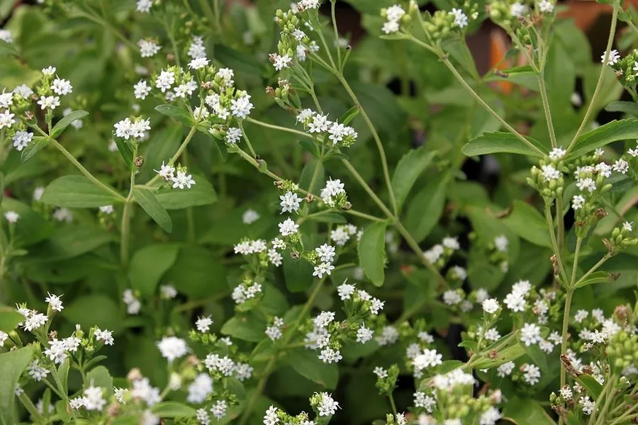

农作物与经济植物 · 植物界
甜叶菊 Stevia rebaudiana

菊科多年生草本，叶片含甜菊糖苷，甜度约为蔗糖的数百倍而几乎不含热量，是重要的天然甜味剂作物。
- 分类
- 门被子植物门纲木兰纲目菊目科菊科属甜叶菊属
- 栖息环境
- 亚热带高地、湿润向阳的坡地，喜温暖、不耐霜冻
- 地理分布
- 原产巴拉圭与巴西交界高地，中国、日本、东南亚及南美广泛栽培
- 保护级别
- 暂无评估；栽培作物，野生居群分布狭窄
物种志
甜叶菊为菊科甜叶菊属多年生草本，株高 0.6–1 米，茎直立，多分枝，密被短毛。叶对生，倒卵形至披针形，边缘有粗锯齿，揉碎后有清甜香气。头状花序小，白色，排成伞房状，花期 7–9 月；瘦果细小，具冠毛。
甜叶菊原产南美洲巴拉圭与巴西交界的高地，当地原住民早有以叶片增甜饮料的传统。其叶片含甜菊糖苷（主要包括甜菊苷与莱鲍迪苷 A），甜度约为蔗糖的 200–300 倍，热量极低，提取物广泛用于无糖饮料、烘焙与餐桌甜味剂。栽培喜温暖湿润、日照充足，适宜疏松肥沃的土壤，不耐严寒，多用扦插或育苗移栽，一年可多次采叶。中国自 20 世纪 70 年代引种，现为世界主要种植与加工国之一。
形态与习性
- 原产地南美巴拉圭与巴西交界的高地
- 株高0.6–1 米，茎直立多分枝
- 甜度叶片甜菊糖苷甜度约为蔗糖的 200–300 倍
- 用途提取天然甜味剂，用于无糖饮料与烘焙
- 栽培喜温湿向阳，不耐寒，扦插或育苗移栽
- 采收一年可采叶 2–3 次，花期前采收最佳
趣味知识
- 甜叶菊叶片中的甜菊糖苷甜度是蔗糖的 200–300 倍，却几乎不提供热量。
- 它原产巴拉圭高地，当地瓜拉尼人数百年前就用叶片给苦味饮料增甜。
- 甜菊糖苷的甜味来得慢、退得也慢，常与赤藓糖醇复配以改善口感。
- 开花后叶片甜度下降，因此采收多安排在现蕾前进行。